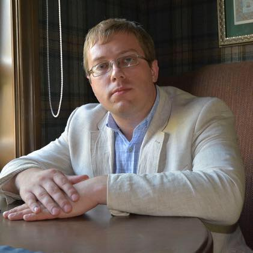

Родился в Томске, живу в Новосибирске. Закончил НГУЭУ в 2012г. по специальности «Юриспруденция», стал практикующим юристом-многостаночником. С 2017 по 2020 год жил и работал в Москве и Московской области. Готов работать на территории Новосибирска, Москвы и МО. Занимаюсь только гражданским правом. За время деятельности пришёл к выводу, что работать нужно не на поток, а на результат. Понимаю, что время, знания и опыт стоят денег, поэтому не даю бесплатных консультаций при встрече. Так появилась идея первого в своём роде сайта по предоставлению юридических услуг в формате поэтапного фокусирования посетителя на своём вопросе и предоставлении текстовой бесплатной консультации, дающей понимание о процедуре разрешения вопроса. Здесь вы не увидите обещаний 100% успеха, информации о 90% выигранных дел и прочих привлекательных красивых фраз и заявлений. Являюсь сторонником адекватной здоровой юриспруденции. Прислушиваюсь к советам, пользуюсь помощью коллег, повышаю квалификацию, читаю профессиональную и художественную литературу.